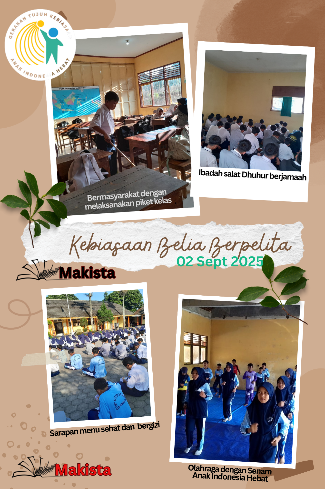
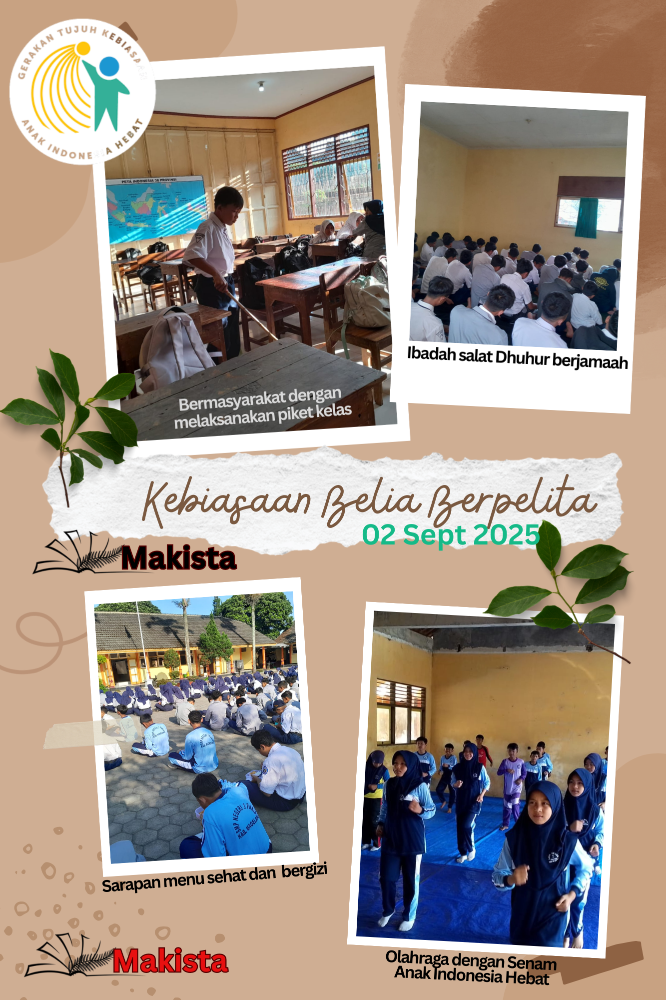
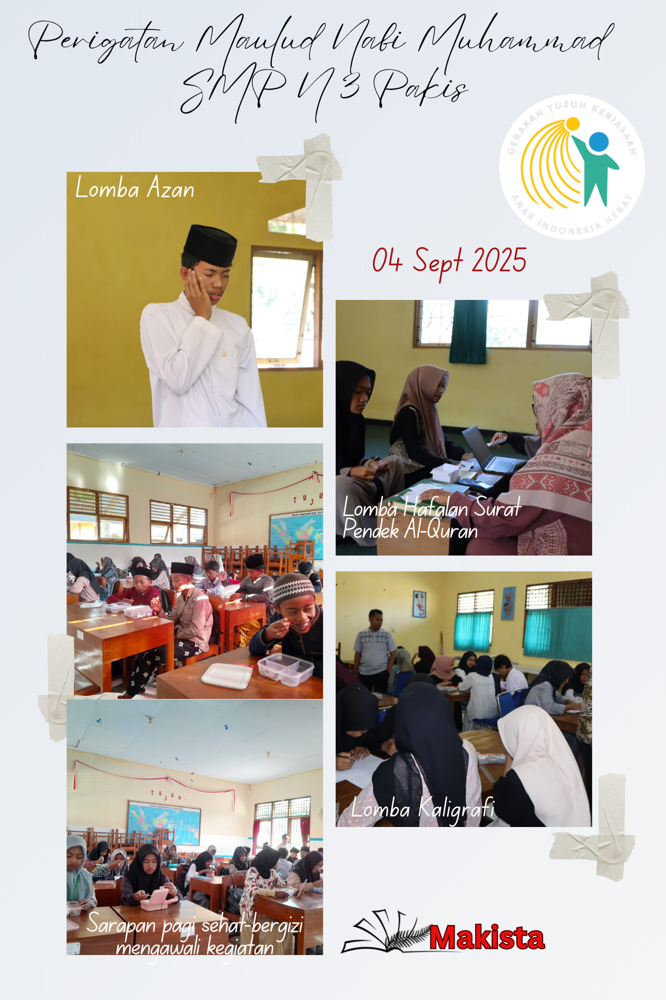
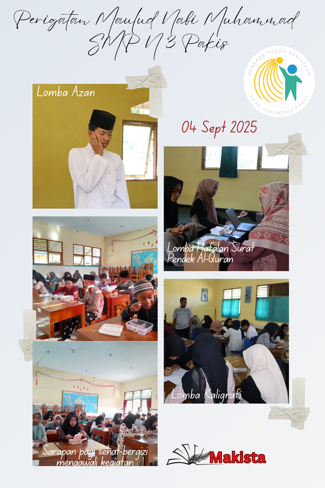

Kokurikuler
Pada Tahun Pelajaran 2025/2026, SMP Negeri 3 Pakis menggunakan Kokurikuler. Kokurikuler ini dirancang untuk mencapai 8 Standar Kompetensi Lulusan (SKL).
Delapan SKL meliputi Keimanan dan Ketaqwaan, Kewargaan, Penalaran Kritis, Kreativitas, Kolaborasi, Kemandirian, dan Komunikasi.
Kegiatan Kokurikuler
7 KAIH
 

Lintas Mapel
 


Cara Lainnya (AUM)


7 KAIH
JURNAL HARIAN
Jurnal harian wajib diisi oleh semua murid setiap hari dan akan direfleksi oleh Guru Wali setiap hari Senin dan Jumat
APEL PAGI
Apel pagi dilaksanakan setiap hari mulai pukul 07.00 sd 07.30 (Menyanyikan Indonesia Raya, Asmaul Husna, Sarapan Pagi bersama)
SALAT DZUHUR
Salat Dzuhur dilaksanakan di 3 tempat;
1) Musala untuk laki laki kelas 7 &8,
2)Ruang Koordinasi Murid untuk laki laki kelas 9 dan
3) ruang keterampilan untuk murid perempuan)
LINTAS MAPEL
Dilaksanakan selang-seling anatar kelas 7, 8 dan 9
JUMAT ADIWIYATA
Dilaksanakan setiap hari Jumat dengan kegiatan untuk mendukung terciptanya Sekolah Adiwiyata Tk Propinsi
JUMAT SEHAT
Dilaksanakan setiap hari Jumat dengan melaksanakan kegiatan senam bersama
JUMAT BERGIZI
Dilaksanakan setiap hari Jumat untuk merancang menu sarapan pagi yang sehat dan bergizi
CARA LAINNYA (MERTI DUSUN/AUM)
Dilaksanakan pada bulan Rojab, pada saat masyarakat desa mengadakan kegiatan Merti Dusun/ AUM
- Perencanaan: Blok minggu terakhir bulan Desember
- Pelaksanaan: Blok minggu 1 dan 2 bulan Januari
- Refleksi: Blok minggu 2 bulan Januari
RENCANA KEGIATAN
Rencana Program disusun sesuai dengan bidangnya masing-masing
7 KAIH
Membantu murid untuk melaksanakan gerakan 7 Kebiasaan Anak Indonesia Hebat
LINTAS MAPEL
Membantu murid untuk mempelajari mata pelajaran yang mendalam
CARA LAINNYA ( MERTI DUSUN/ AUM)
Membantu murid mengenali potensi, memiliki sikap dan keterampilan belajar yang efektif untuk mencapai hasil optimal.
REFLEKSI
Membantu murid dalam eksplorasi, aspirasi, dan pengambilan keputusan karir secara rasional dan realistis.